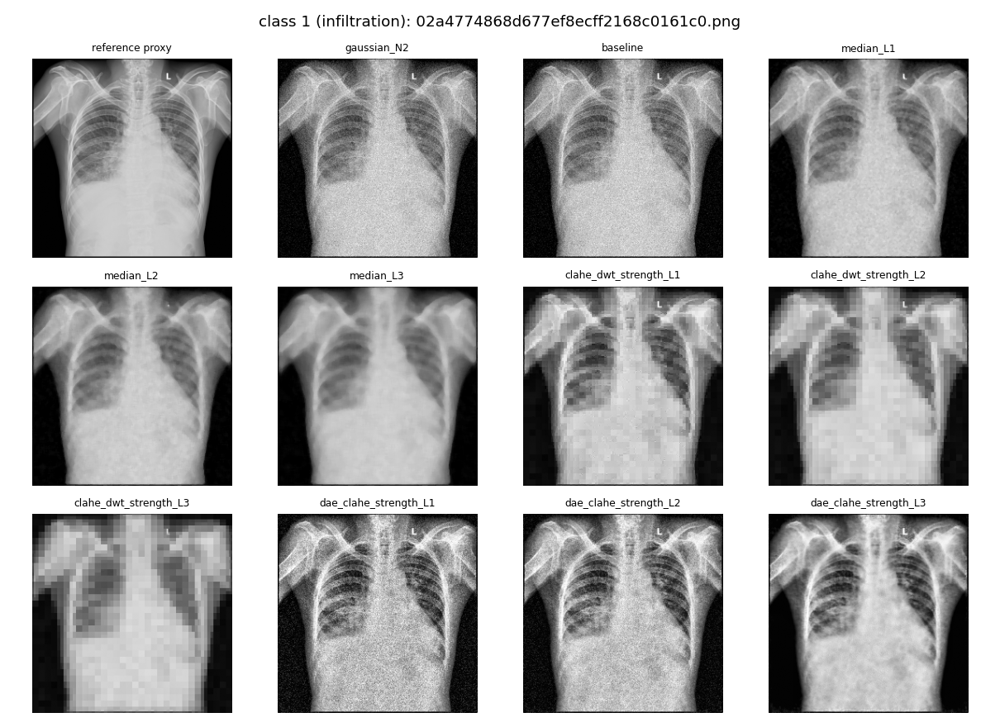
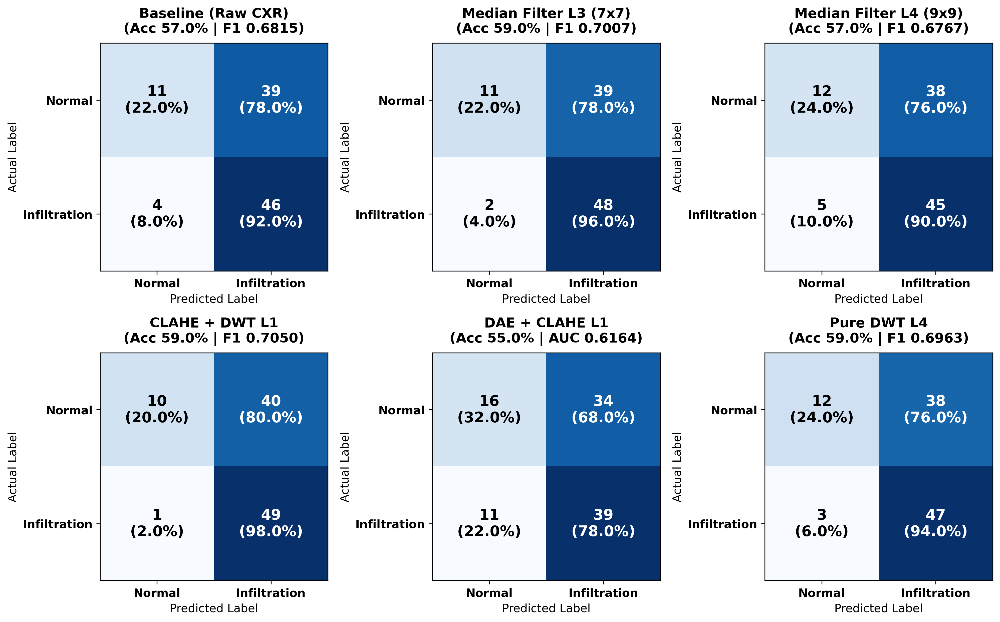
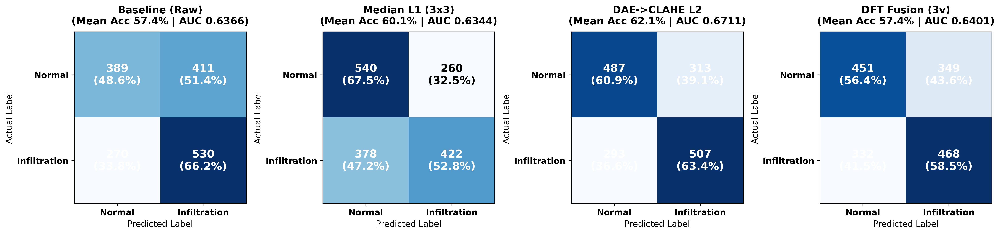
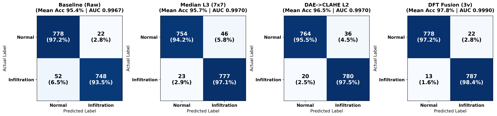

การเพิ่มประสิทธิภาพการตรวจจับภาวะปอดอักเสบจากภาพเอกซเรย์ทรวงอก
ด้วยการลดสัญญาณรบกวนและปัญญาประดิษฐ์ที่อธิบายได้
คณะผู้จัดทำ (Authors)
1. นายสัพพัญญู คำตุ้ม (673380066-4)
2. นายปิยะพล ตุ่นป่า (673380280-2)
อาจารย์ที่ปรึกษาโครงงาน (Advisor)
อ.ดร.พบพร ด่านวิรุทัย (Dr. Pobporn Danvirutai)
รายวิชา CP353761 สัมมนาทางวิทยาการคอมพิวเตอร์ • วิทยาลัยการคอมพิวเตอร์ มหาวิทยาลัยขอนแก่น
1. ที่มาและความสำคัญของปัญหา (Background & Clinical Problem)
ความท้าทายของการวินิจฉัยภาวะปอดอักเสบแทรกซึม (Pulmonary Infiltration) และปัญหาโมเดลกล่องดำ
1. ความสำคัญทางคลินิก
- Pulmonary Infiltration (ภาวะฝ้าในปอด/ปอดอักเสบแทรกซึม): เกิดจากการสะสมของของเหลว เซลล์อักเสบ หรือหนองในถุงลมปอด (WHO, 2024)
- Chest X-ray (CXR): เป็นหัตถการด่านแรกที่รวดเร็วและเข้าถึงง่ายที่สุด
- แต่ปริมาณภาพถ่ายรังสีเพิ่มขึ้นอย่างมหาศาล สวนทางกับจำนวนรังสีแพทย์ผู้เชี่ยวชาญ
2. ความยากของรอยโรค Infiltration
- รอยโรคมีลักษณะเป็น ฝ้าขาวจาง ๆ กระจายตัว ขอบเขตไม่ชัดเจน (Diffuse & Ill-defined Opacity)
- กลมกลืนไปกับเนื้อเยื่อปอดปกติและถูกบดบังด้วยกระดูกซี่โครง
- ก่อให้เกิดความแปรปรวนในการอ่านผลระหว่างแพทย์ (Inter-observer Variability) (Raoof et al., 2012; Wang et al., 2017)
3. ปัญหาโมเดลกล่องดำ (Black-Box)
- โครงข่าย CNN จำแนกความผิดปกติได้แม่นยำระดับเทียบเท่าผู้เชี่ยวชาญ (Rajpurkar et al., 2017; Parra-Cabrera et al., 2026)
- แต่ขาดความโปร่งใส แพทย์ไม่ทราบว่าโมเดลตัดสินใจจากรอยโรคจริง หรือจาก สิ่งแปลกปลอม (Confounders) เช่น สายระโยง หรือ สัญญาณรบกวน (Noise) (Rudin, 2019; Dhar et al., 2023)
2. ช่องว่างทางความรู้และแนวคิดงานวิจัย (Research Gaps & Motivation)
ทำไมต้องศึกษาการลดสัญญาณรบกวนควบคู่กับ Explainable AI บนรอยโรค Infiltration?
ช่องว่างทางความรู้ที่ 1 (Gap 1)
ความแม่นยำและเสถียรภาพของ XAI บนรอยโรคฝ้ากระจายยังต่ำ
- รอยโรคแบบฝ้ากระจาย (Infiltration) มักให้ความแม่นยำและค่า F1-Score ต่ำกว่า รอยโรคที่มีขอบเขตชัดเจน เช่น Nodule หรือ Cardiomegaly
- แผนภาพอธิบายผลของ AI (Grad-CAM / SHAP) มักล้มเหลวในการระบุขอบเขตรอยโรคที่แพร่กระจายตัวอย่างถูกต้อง (Chrysoula, 2023)
ช่องว่างทางความรู้ที่ 2 (Gap 2)
ความเสี่ยงภาวะ Over-smoothing และการขาดการประเมิน XAI เชิงปริมาณ
- ภาพ CXR มีสัญญาณรบกวนที่กระทบเสถียรภาพของ XAI โดยตรง (Adebayo et al., 2018)
- แต่การลด Noise ที่รุนแรงเกินไปเสี่ยงเกิด Over-smoothing ลบรอยฝ้าบางจางของ Infiltration ทิ้งไปพร้อมกับ Noise
- งานวิจัยส่วนใหญ่ประเมิน XAI เพียงการมองด้วยสายตา (Qualitative) ขาดการวัดผลเชิงปริมาณ (Quantitative Localization) ภายใต้ Fair Comparison
แนวคิดการวิจัยของเรา (Proposed Research Approach)
- ศึกษาผลกระทบของการลดสัญญาณรบกวนหลายระดับ (L1–L4), การแยกย่านความถี่ (DWT/DFT) และการรวมหลายมุมมองความถี่ (Multi-view Frequency Fusion) ต่อความแม่นยำของโมเดล ResNet-50
- ทดสอบข้ามชุดข้อมูลมาตรฐาน 2 ชุด (NIH ChestX-ray14 และ VinBigData) ทั้งบนภาพต้นฉบับและภาพจำลองสัญญาณรบกวน 5 ตระกูล × 3 ระดับความแรง (16 สภาวะ)
- วิเคราะห์ความสัมพันธ์ระหว่างคุณภาพภาพทางสถิติ (PSNR, SSIM) กับประสิทธิภาพการจำแนกโรค และประเมินความแม่นยำการชี้ตำแหน่งรอยโรคด้วย Grad-CAM และ SHAP เทียบกับกรอบ Ground-Truth ของรังสีแพทย์
3. วัตถุประสงค์ของโครงงาน (Research Objectives)
เป้าหมายหลักทั้ง 4 ประการของการศึกษา
วัตถุประสงค์ข้อที่ 3.1
เพื่อศึกษาและเปรียบเทียบประสิทธิภาพของเทคนิคการลดสัญญาณรบกวนหลายระดับ (L1–L4) ได้แก่ ภาพดั้งเดิม (Baseline), Median Filter, CLAHE ร่วมกับ DWT, Denoising Autoencoder (DAE) ร่วมกับ CLAHE, การแยกย่านความถี่ด้วย DWT และการรวมเทคนิคเชิงความถี่ (Multi-view DWT L1–L4 Fusion และ DFT Low/Mid/High Fusion) ต่อความสามารถในการจำแนกภาวะ Infiltration บนชุดข้อมูล NIH ChestX-ray14 และ VinBigData
วัตถุประสงค์ข้อที่ 3.2
เพื่อพัฒนาและฝึกสอนแบบจำลองการเรียนรู้เชิงลึก (ResNet-50) ภายใต้เงื่อนไขการทดลองที่ควบคุมอย่างเป็นธรรม (Fair Comparison) และทดสอบความทนทาน (Robustness) ของแบบจำลองทั้งบนภาพต้นฉบับและภาพจำลองสัญญาณรบกวน 5 ตระกูล (Gaussian, Poisson, Poisson–Gaussian, Salt-and-Pepper และ Speckle) ใน 3 ระดับความแรง (N1–N3) รวม 16 สภาวะ
วัตถุประสงค์ข้อที่ 3.3
เพื่อประยุกต์ใช้เทคนิคปัญญาประดิษฐ์ที่อธิบายได้ (Explainable AI: Grad-CAM และ SHAP) ในการแสดงและวิเคราะห์บริเวณรอยโรคที่ส่งผลต่อการตัดสินใจของแบบจำลอง
วัตถุประสงค์ข้อที่ 3.4
เพื่อประเมินผลกระทบของการลดสัญญาณรบกวนต่อความแม่นยำในการระบุตำแหน่งรอยโรคของ XAI ในเชิงปริมาณ (Quantitative Localization Evaluation) ผ่านตัวชี้วัด Pointing Game Hit Rate, Energy Inside Bounding Box และ IoU เทียบกับพิกัดรอยโรคจริงของรังสีแพทย์ (Ground-Truth Bounding Box)
4. ทฤษฎีสัญญาณรบกวน 5 ตระกูล และเทคนิคการลดสัญญาณรบกวน
แหล่งกำเนิดสัญญาณรบกวนในภาพถ่ายรังสีและกลไกการกรองสัญญาณ
ตระกูลสัญญาณรบกวนในภาพเอกซเรย์ (5 Noise Families)
- 1. Gaussian Noise: สัญญาณรบกวนแบบบวก (Additive) จากความร้อนและวงจรอิเล็กทรอนิกส์ของตัวรับภาพ กำหนดความแรงด้วย $\sigma$
- 2. Poisson (Quantum/Shot) Noise: เกิดจากการกระจายตัวเชิงสถิติของจำนวนโฟตอนรังสีเอกซ์ รุนแรงขึ้นเมื่อใช้ปริมาณรังสีต่ำ
- 3. Poisson–Gaussian Noise: แบบจำลองผสมที่สะท้อนพฤติกรรมของตัวรับภาพดิจิทัลจริงได้ใกล้เคียงที่สุด (Foi et al., 2008)
- 4. Salt-and-Pepper (Impulse) Noise: พิกเซลผิดปกติแบบจุดขาว/ดำจากพิกเซลบกพร่องหรือความผิดพลาดในการส่งข้อมูล
- 5. Speckle Noise: สัญญาณรบกวนแบบคูณ $I(1+n)$ ทำให้ลวดลายเนื้อเยื่อผิดเพี้ยนและลดความเปรียบต่าง
เทคนิคการลดสัญญาณรบกวนและการรวมมุมมองความถี่
- Median Filter ($3\times3$ ถึง $9\times9$): แทนค่าพิกเซลด้วยค่ามัธยฐาน ขจัด Impulse Noise ได้ดี แต่หาก Kernel ใหญ่เกินไปจะเกิด Over-smoothing (Chattopadhyay, 2022)
- CLAHE ร่วมกับ DWT (db1): ปรับความเปรียบต่างเฉพาะที่ควบคู่กับการกรองสัมประสิทธิ์ความถี่สูงด้วย Soft Thresholding และการแยกย่านความถี่ A3, D3, D2, D1 (Chutia et al., 2024)
- Deep Denoising Autoencoder (DAE) + CLAHE: โครงข่าย Autoencoder พร้อม Skip Connections เรียนรู้การกำจัด Noise โดยคงโครงสร้างเนื้อเยื่อฝ้าไว้ (Thamilarasi et al., 2025; Song et al., 2025)
- DFT & Multi-view Fusion: แยกย่านความถี่ด้วย Radial Mask (ต่ำ $<0.125$, กลาง $0.125\text{–}0.25$, สูง $>0.25\text{ cycles/pixel}$) แล้วรวมหลายมุมมองก่อนป้อนเข้า ResNet-50
5. การจัดหาชุดข้อมูลและการเตรียมข้อมูลภาพ (Datasets & Image Contract)
การตรวจสอบข้ามชุดข้อมูล (Cross-dataset Validation) และการป้องกันปัญหา Data Leakage
1. ชุดข้อมูล NIH ChestX-ray14 (Wang et al., 2017)
- ภาพขนาด $1024\times1024$ พิกเซล (รวม 112,120 ภาพ จากผู้ป่วย 30,805 ราย)
- Positive Class: ภาพที่มีฉลากภาวะ
Infiltration - Negative Class: ภาพที่มีฉลาก
No Findingเท่านั้น (ไม่รวมโรคแทรกซ้อนอื่น เช่น Effusion/Atelectasis เพื่อป้องกันฟีเจอร์พยาธิสภาพอื่นปะปน) - ตรึงการแบ่งข้อมูลตาม
train_val_list.txtและtest_list.txtซึ่งเป็น Patient-level Split ป้องกัน Data Leakage
2. ชุดข้อมูล VinBigData Chest X-ray (Nguyen et al., 2022)
- ภาพขนาด $512\times512$ พิกเซล ซึ่งมีรอยโรคชัดเจนและฉลากตรวจสอบโดยรังสีแพทย์
- Positive Class:
Infiltration| Negative Class:No Finding - คัดเลือกชุดข้อมูลในสัดส่วนเดียวกับ NIH ทุกประการ
- มีกรอบพิกัดรอยโรคจริง (Ground-Truth Bounding Box) จากรังสีแพทย์สำหรับใช้ประเมิน XAI เชิงปริมาณในระยะถัดไป
สัดส่วนชุดข้อมูลในการทดลอง (เหมือนกันทั้ง 2 ชุดข้อมูล)
- การทดลองที่ 1 (ภาพต้นฉบับ 21 สภาวะ): Train 400 ภาพ (200/คลาส), Validation 80 ภาพ, Balanced Test 100 ภาพ (50/คลาส)
- การทดลองที่ 2 (จำลอง Noise 16 สภาวะ): คัดภาพที่มี Noise เดิมต่ำที่สุดด้วยวิธี Wavelet MAD (db2) ได้ Train 320 ภาพ (160/คลาส), Validation 80 ภาพ, Test 100 ภาพ
สัญญาข้อมูลภาพ (Image Contract & Preprocessing)
- ย่อขนาดเป็น $256\times256$ พิกเซล สำหรับขั้นตอนลดสัญญาณรบกวน และ $224\times224$ พิกเซล สำหรับป้อนเข้า ResNet-50
- กำหนด Image Contract: อาร์เรย์ NumPy 2 มิติ ชนิดข้อมูล
uint8ช่วงความสว่าง[0, 255]มาตรฐานเดียวกันทุกเทคนิค
6. การออกแบบการทดลองที่ 1: ภาพต้นฉบับ 21 สภาวะ (Experiment 1 Setup)
การศึกษาผลของการเพิ่มระดับความแรง (L1–L4) และการแยกย่านความถี่ด้วย DWT
ฝึกสอน ResNet-50 แยกกัน 1 แบบจำลองต่อ 1 สภาวะ รวม 21 สภาวะ (Baseline 1 สภาวะ + วิธีลดสัญญาณรบกวน 20 สภาวะ) ภายใต้เงื่อนไข Fair Comparison (Cross-Entropy Loss, Adam $\text{LR}=10^{-4}$, Batch Size = 32, 7 Epochs, Seed = 42):
| กลุ่มที่ | เทคนิค (พารามิเตอร์) | ระดับ L1 | ระดับ L2 | ระดับ L3 | ระดับ L4 |
|---|---|---|---|---|---|
| 1 | Baseline (Raw CXR) | ภาพดิบ ไม่ผ่านการลดสัญญาณรบกวน (1 สภาวะ) | |||
| 2 | Median Filter (ขนาด Kernel) | 3×3 | 5×5 | 7×7 | 9×9 |
| 3 | CLAHE + DWT db1 (clip_limit, thresh_ratio) |
1.0, 0.05 | 2.0, 0.10 | 3.0, 0.20 | 4.0, 0.30 |
| 4 | DAE + CLAHE (clip_limit) |
2.0 | 4.0 | 8.0 | 10.0 |
| 5 | Pure DWT db1 ไม่ใช้ CLAHE (thresh_ratio) |
0.05 | 0.10 | 0.20 | 0.35 |
| 6 | DWT Frequency Band Analysis (db1 3 ระดับ) | Low Only (A3) | Mid Only (D3, D2) | High Only (D1) | Selective DWT |
7. การออกแบบการทดลองที่ 2: ความทนทานต่อ Noise 16 สภาวะ × 12 วิธี
พารามิเตอร์สัญญาณรบกวนจำลอง 5 ตระกูล (N1–N3) และการรวมหลายมุมมองความถี่ (Multi-view Fusion)
| ตระกูล Noise | พารามิเตอร์ | N1 (ต่ำ) | N2 (กลาง) | N3 (สูง) |
|---|---|---|---|---|
| Gaussian | $\sigma$ | 0.02 | 0.05 | 0.10 |
| Poisson | Peak Count | 500 | 100 | 30 |
| Poisson–Gaussian | (Peak, $\sigma$) | 500, 0.01 | 100, 0.03 | 30, 0.05 |
| Salt-and-Pepper | สัดส่วนพิกเซล | 0.005 | 0.02 | 0.05 |
| Speckle | $\sigma$ | 0.05 | 0.10 | 0.20 |
| ลำดับ | วิธี (condition_id) | รายละเอียด | Views |
|---|---|---|---|
| 1 | baseline | ภาพหลังเติม Noise ไม่ลดสัญญาณรบกวน | 1 |
| 2–4 | median_L1, L2, L3 | Median Filter ขนาด 3×3, 5×5, 7×7 | 1 |
| 5–7 | clahe_dwt_strength_L1..L3 | DWT db1 3 ระดับ → CLAHE (ตัวคูณ 0.5, 1.0, 2.0) | 1 |
| 8–10 | dae_clahe_strength_L1..L3 | DAE → CLAHE (สัดส่วนผสม $\alpha = 0.25, 0.50, 1.00$) | 1 |
| 11 | dwt_L1_L4_fusion | รวมภาพฐาน + DWT ระดับ 1–4 เข้าด้วยกัน | 5 |
| 12 | dft_low_mid_high_fusion | รวมย่านความถี่ DFT ต่ำ, กลาง และสูง | 3 |

8. ตัวชี้วัดการประเมินผลทั้ง 3 มิติ (Evaluation Metrics)
การประเมินคุณภาพภาพ การจำแนกโรค และความแม่นยำเชิงตำแหน่งของ XAI
1. คุณภาพการกู้คืนภาพ
วัดความใกล้เคียงกับภาพอ้างอิงก่อนเติมสัญญาณรบกวน (Clean Reference):
- PSNR (dB): วัดความเที่ยงตรงของสัญญาณภาพระดับพิกเซล
- SSIM [0, 1]: วัดการรักษารูปร่าง โครงสร้าง ความสว่าง และความเปรียบต่าง (Wang et al., 2004)
2. ประสิทธิภาพการจำแนกโรค
ประเมินผ่าน Confusion Matrix และเกณฑ์มาตรฐานทางการแพทย์:
- Sensitivity (Recall): $\frac{TP}{TP+FN}$ ลดการวินิจฉัยตกหล่น
- Specificity: $\frac{TN}{TN+FP}$ ลดผลบวกลวง
- ROC-AUC & PR-AUC: ประเมินความสามารถในการแยกคลาสโดยไม่ขึ้นกับเกณฑ์ตัดสินใจ (Fawcett, 2006; Saito & Rehmsmeier, 2015)
3. ความแม่นยำเชิงตำแหน่ง XAI
เปรียบเทียบ Saliency Map $H(x,y)$ กับกรอบแพทย์ $B$:
- วัดครบทั้งจุดโฟกัสสูงสุด (Pointing Game), สัดส่วนพลังงานในกรอบ (Energy) และพื้นที่ซ้อนทับ (IoU ที่ $\tau=0.3, 0.5$)
9. ผลการทดลองที่ 1: การจำแนกบนภาพต้นฉบับ (21 สภาวะ)
หลักฐานเชิงประจักษ์ของภาวะ Over-smoothing ที่ระดับ L4 และบทบาทของย่านความถี่
| สภาวะตัวแทน (Exp 1) | NIH Acc | NIH F1 | NIH AUC | VinBig Acc | VinBig F1 | VinBig AUC |
|---|---|---|---|---|---|---|
| Baseline (Raw CXR) | 0.5700 | 0.6815 | 0.5932 | 0.9200 | 0.9231 | 0.9676 |
| Median Filter L3 (7×7) | 0.5900 | 0.7007 | 0.5704 | 0.9100 | 0.9072 | 0.9680 |
| Median Filter L4 (9×9) [Over-smooth] | 0.5700 ↓ | 0.6767 ↓ | 0.5880 | 0.8700 ↓ | 0.8762 ↓ | 0.9528 ↓ |
| CLAHE + DWT L1 | 0.5900 | 0.7050 | 0.5084 | 0.8700 | 0.8713 | 0.9512 |
| Pure DWT L1 | 0.5700 | 0.6614 | 0.6616 | 0.9000 | 0.9000 | 0.9560 |
| DWT Single Band (Low/Mid/High) | 0.52–0.57 | 0.56–0.65 | 0.52–0.59 | 0.78–0.85 ↓ | 0.74–0.85 ↓ | 0.88–0.93 ↓ |
(2) การใช้ย่านความถี่เดี่ยวทำให้ Accuracy บน VinBigData ลดลงเหลือ 78–85% ชี้ว่าข้อมูลรอยโรคกระจายอยู่ในหลายย่านความถี่


10. ผลการทดลองที่ 2: ความทนทานต่อสัญญาณรบกวน 16 สภาวะ (ชุดข้อมูล NIH)
ตารางที่ 6 ค่าเฉลี่ย Macro-average จาก 16 สภาวะ (Clean + 5 ตระกูล Noise × 3 ระดับ; 1,600 การทำนาย/วิธี)
| อันดับ | วิธี (NIH ChestX-ray14) | Views | ROC-AUC | PR-AUC | Accuracy | F1-Score | Recall | Spec. |
|---|---|---|---|---|---|---|---|---|
| 1 | dae_clahe_strength_L2 | 1 | 0.6711 | 0.6920 | 62.13% | 0.6247 | 63.38% | 60.88% |
| 2 | dae_clahe_strength_L3 | 1 | 0.6705 | 0.6695 | 60.81% | 0.5504 | 49.00% | 72.63% |
| 3 | dae_clahe_strength_L1 | 1 | 0.6596 | 0.6717 | 60.69% | 0.5961 | 58.88% | 62.50% |
| 4 | dft_low_mid_high_fusion | 3 | 0.6401 | 0.6726 | 57.44% | 0.5786 | 58.50% | 56.38% |
| 5 | baseline (ไม่ลด Noise) | 1 | 0.6367 | 0.6698 | 57.44% | 0.6049 | 66.25% | 48.63% |
| 6 | median_L1 (3×3) | 1 | 0.6344 | 0.6851 | 60.13% | 0.5668 | 52.75% | 67.50% |
| 7 | clahe_dwt_strength_L1 | 1 | 0.6080 | 0.6195 | 58.94% | 0.5900 | 60.25% | 57.63% |
| 8 | median_L3 (7×7) | 1 | 0.6074 | 0.6580 | 57.19% | 0.5532 | 53.00% | 61.38% |
| 10 | dwt_L1_L4_fusion | 5 | 0.6035 | 0.6137 | 55.63% | 0.6035 | 68.88% | 42.38% |

• DAE → CLAHE L2 ได้อันดับ 1 ทั้ง ROC-AUC (0.6711), PR-AUC (0.6920), Accuracy (62.13%, เพิ่มจาก Baseline +4.69%) และ F1-Score (0.6247)
• ช่วยแก้ปัญหาการทำนายเอนไปทาง Infiltration โดยยกระดับ Specificity จาก 48.63% เป็น 60.88%
11. ผลการทดลองที่ 2: ความทนทานต่อสัญญาณรบกวน 16 สภาวะ (ชุดข้อมูล VinBigData)
ตารางที่ 7 ค่าเฉลี่ย Macro-average จาก 16 สภาวะ บนชุดข้อมูล VinBigData Chest X-ray
| อันดับ | วิธี (VinBigData) | Views | ROC-AUC | PR-AUC | Accuracy | F1-Score | Recall | Spec. |
|---|---|---|---|---|---|---|---|---|
| 1 | dft_low_mid_high_fusion | 3 | 0.9991 | 0.9991 | 97.81% | 0.9785 | 98.38% | 97.25% |
| 2 | dae_clahe_strength_L2 | 1 | 0.9970 | 0.9972 | 96.50% | 0.9655 | 97.50% | 95.50% |
| 3 | median_L3 (7×7) | 1 | 0.9970 | 0.9972 | 95.69% | 0.9579 | 97.13% | 94.25% |
| 4 | baseline (ไม่ลด Noise) | 1 | 0.9967 | 0.9970 | 95.38% | 0.9534 | 93.50% | 97.25% |
| 5 | median_L1 (3×3) | 1 | 0.9964 | 0.9967 | 95.81% | 0.9588 | 96.50% | 95.13% |
| 6 | median_L2 (5×5) | 1 | 0.9961 | 0.9963 | 96.00% | 0.9608 | 96.88% | 95.13% |
| 8 | clahe_dwt_strength_L2 | 1 | 0.9950 | 0.9956 | 94.13% | 0.9420 | 92.63% | 95.63% |
| 12 | dwt_L1_L4_fusion | 5 | 0.9785 | 0.9821 | 91.19% | 0.9107 | 88.63% | 93.75% |

• DFT Low/Mid/High Fusion (3 Views) ได้อันดับ 1 โดยรวม (Mean AUC 0.9991, Acc 97.81%, Recall 98.38%)
• ในกลุ่มภาพเดี่ยว (1 View) DAE → CLAHE L2 ได้อันดับ 1 ตรงกันทั้ง 2 ชุดข้อมูล (Acc 96.50%, เพิ่ม Recall จาก 93.50% เป็น 97.50%)
12. ความจำเพาะของแต่ละเทคนิคต่อตระกูลสัญญาณรบกวน (Noise Specificity)
ตารางที่ 8 เปรียบเทียบวิธีที่ดีที่สุดแยกตามตระกูลสัญญาณรบกวน (ค่าเฉลี่ยระดับความแรง N1–N3)
| ตระกูลสัญญาณรบกวน | NIH: Baseline AUC | NIH: วิธีที่ดีที่สุด (AUC) | VinBigData: Baseline Acc (AUC) | VinBigData: วิธีที่ดีที่สุด |
|---|---|---|---|---|
| Clean (ก่อนเติม Noise) | 0.6580 | median_L1 (0.6980) |
96.00% (0.9960) | clahe_dwt_L3 (98.00%) / dft_fusion (AUC 1.0000) |
| Gaussian | 0.6527 | dae_clahe_L3 (0.6995) |
96.33% (0.9976) | dft_fusion (99.00%); ภาพเดี่ยว: dae_clahe_L1/L2 (96.67%) |
| Poisson | 0.6424 | dae_clahe_L3 (0.6876) |
96.33% (0.9987) | dft_fusion (98.67%); ภาพเดี่ยว: median_L2 (97.67%) |
| Poisson–Gaussian | 0.6344 | dae_clahe_L3 (0.6796) |
96.00% (0.9988) | dft_fusion (98.00%); ภาพเดี่ยว: dae_clahe_L1 (97.33%) |
| Salt-and-Pepper (Impulse) | 0.6025 (ต่ำสุด) | median_L1 (0.6988) |
92.33% (0.9903) | dae_clahe_L3 (96.00%) / dft_fusion (95.67%) |
| Speckle | 0.6441 | dae_clahe_L2 (0.6873) |
95.67% (0.9983) | dft_fusion (98.33%); ภาพเดี่ยว: dae_clahe_L1 (97.67%) |
สัญญาณรบกวนแบบกระจายตัวต่อเนื่อง
ได้แก่ Gaussian, Poisson, Poisson–Gaussian และ Speckle: วิธี DAE → CLAHE (L2/L3) และ DFT Fusion ให้ผลดีที่สุด เนื่องจากโครงข่าย Autoencoder เรียนรู้การกระจายตัวของสัญญาณรบกวนและคงโครงสร้างเนื้อเยื่อปอดไว้ได้
สัญญาณรบกวนแบบจุด (Salt-and-Pepper)
เป็นจุดอ่อนรุนแรงที่สุดของ Baseline (NIH AUC ตกเหลือ 0.6025, VinBigData ที่ระดับ N2 Acc ตกเหลือ 89.00%): Median Filter L1 ($3\times3$) กู้คืน AUC บน NIH เป็น 0.6988 และบน VinBigData กู้คืน Accuracy เป็น 93–96%
13. คุณภาพภาพ (PSNR/SSIM) vs ประสิทธิภาพการจำแนกโรค (Over-smoothing)
ตารางที่ 9 และภาพที่ 6 กรณีศึกษาสภาวะรุนแรง Gaussian N3 ($\sigma = 0.10$) — ค่า PSNR สูงทำให้จำแนกโรคดีขึ้นจริงหรือไม่?
| วิธี (ที่สภาวะ Gaussian N3) | NIH PSNR | NIH SSIM | NIH AUC | VinBig PSNR | VinBig SSIM | VinBig AUC (Acc) |
|---|---|---|---|---|---|---|
baseline |
20.56 dB | 0.2161 | 0.6688 | 20.53 dB | 0.2655 | 0.9996 (99%) |
median_L3 (7×7) |
29.79 dB | 0.7775 | 0.5624 ↓ | 29.85 dB | 0.7964 | 0.9940 (94%) ↓ |
dae_clahe (L3 / L2) |
20.64 dB | 0.5501 | 0.7036 ↑ | 17.68 dB | 0.2757 | 1.0000 (99%) ↑ |
•
median_L3 ($7\times7$) เกลี่ยภาพจนเรียบทำให้ PSNR สูงที่สุด (~29.8 dB) แต่การเกลี่ยที่รุนแรงได้ลบเลือนขอบฝ้าจาง ๆ ของ Infiltration ที่โมเดลต้องใช้จำแนกโรค ส่งผลให้ ROC-AUC ดิ่งลงเหลือ 0.5624• DAE → CLAHE มี PSNR ต่ำกว่าเนื่องจาก CLAHE ปรับเพิ่มความเปรียบต่าง แต่ช่วยรักษาและเน้นโครงสร้างรอยโรค ทำให้ได้ ROC-AUC สูงสุดทั้ง 2 ชุดข้อมูล (0.7036 และ 1.0000)

14. แนวทางการประเมิน XAI เชิงปริมาณในระยะถัดไป (Next Phase Plan)
การคัดเลือกแบบจำลองตัวแทนและการประเมินความสอดคล้องกับกรอบ Ground-Truth ของรังสีแพทย์
DAE → CLAHE L2 เป็นวิธีหลัก (ชนะเลิศอันดับ 1 ในกลุ่มภาพเดี่ยวตรงกันทั้ง 2 ชุดข้อมูล) โดยเก็บ Baseline, Median L1 (ตัวแทนสำหรับ Salt-and-Pepper) และ DFT Fusion ไว้เป็นคู่เปรียบเทียบ พร้อมยืนยันผลด้วยการฝึกหลาย Random Seed (Multi-seed Validation)


15. ขอบเขตและข้อจำกัดของการวิจัย (Scope & Limitations)
ขอบเขตด้านข้อมูล เครื่องมือประมวลผล และข้อจำกัดในการตีความผล
ขอบเขตการวิจัยและเครื่องมือ (Scope & Tools)
- ขอบเขตชุดข้อมูล: จำแนกภาวะปอดอักเสบ (
Infiltration) เทียบกับปอดปกติ (No Finding) บนชุดข้อมูล NIH ChestX-ray14 และ VinBigData โดยแบ่งข้อมูลระดับผู้ป่วย (Patient-level Split) - ขอบเขตแบบจำลอง: ใช้ ResNet-50 เป็นสถาปัตยกรรมหลักภายใต้สภาวะควบคุมคงที่ (Fair Comparison) ร่วมกับเทคนิคการลดสัญญาณรบกวน L1–L4 และการรวมย่านความถี่ DWT/DFT
- ซอฟต์แวร์และทรัพยากร: พัฒนาด้วยภาษา Python, PyTorch, Torchvision, Scikit-learn, OpenCV, PyWavelets, Scikit-image, PyTorch Grad-CAM และ SHAP บนระบบ Google Colab Pro (GPU)
ข้อจำกัดของการวิจัย (Limitations)
- 6.3.1 วัตถุประสงค์ทางการศึกษา: จัดทำขึ้นเพื่อการศึกษาและวิจัยเบื้องต้น มิได้มุ่งหมายให้นำไปใช้วินิจฉัยทางคลินิกจริงโดยไม่ผ่านการรับรองจากผู้เชี่ยวชาญทางการแพทย์
- 6.3.2 ความแปรปรวนของฉลาก: รอยโรค Infiltration มีขอบเขตไม่ชัดเจนและมี Inter-observer Variability ซึ่งอาจส่งผลต่อฉลากและกรอบ Bounding Box อ้างอิง
- 6.3.3 สัญญาณรบกวนจำลอง: ใช้เพื่อวัดความทนทานภายใต้เงื่อนไขควบคุม ไม่ได้เป็นตัวแทนสัญญาณรบกวนทางกายภาพของเครื่องเอกซเรย์จริงทุกรูปแบบ
- 6.3.4 ขนาดตัวอย่างและ Seed: ผลเบื้องต้นมาจากการฝึกด้วย Random Seed เดียวและชุดทดสอบ 100 ภาพต่อชุดข้อมูล ความแตกต่างเล็กน้อยจึงต้องยืนยันด้วยหลาย Seed ในระยะถัดไป
16. แผนและระยะเวลาดำเนินการ และงบประมาณ (Timeline & Budget)
ตารางที่ 10 แผนการดำเนินงาน (ก.ย. 2569 – มี.ค. 2570) และประมาณการค่าใช้จ่าย
| ขั้นตอนการดำเนินงาน | ก.ย. 69 | ต.ค. 69 | พ.ย. 69 | ธ.ค. 69 | ม.ค. 70 | ก.พ. 70 | มี.ค. 70 |
|---|---|---|---|---|---|---|---|
| 1. จัดหาและคัดเลือกชุดข้อมูล NIH & VinBigData | ✔ | ||||||
| 2. เตรียมและปรับสภาพข้อมูลภาพ (Preprocessing) | ✔ | ||||||
| 3. การทดลองที่ 1: ลด Noise L1–L4 & แยกความถี่ (21 สภาวะ) | ✔ | ✔ | |||||
| 4. การทดลองที่ 2: จำลอง Noise 16 สภาวะ & รวมเทคนิค | ✔ | ||||||
| 5. ประเมินคุณภาพการกู้คืนภาพ (PSNR, SSIM) | ✔ | ||||||
| 6. ฝึกสอนแบบจำลองยืนยันผลหลาย Seed (Fair Comparison) | ■ | ■ | |||||
| 7. สกัดและสร้างแผนภาพอธิบายผล (XAI Implementation) | ■ | ■ | |||||
| 8. ประเมินประสิทธิภาพการจำแนกโรค | ■ | ■ | |||||
| 9. ประเมินความแม่นยำของ XAI เชิงสถิติ (Localization) | ■ | ■ | |||||
| 10. สรุปผลและจัดทำรายงานฉบับสมบูรณ์ | ■ | ■ |
งบประมาณโครงงาน (Budget)
- 1. หมวดค่าบริการระบบคลาวด์และทรัพยากรคำนวณ:
- ค่าบริการ Google AI Pro (1,500 บาท × 6 เดือน) = 9,000 บาท
- 2. หมวดวัสดุคอมพิวเตอร์และอุปกรณ์สำรองข้อมูล:
- Portable SSD / Flash Drive (1 ชุด) = 1,200 บาท
- 3. หมวดค่าใช้สอยและการจัดพิมพ์เอกสาร:
- เอกสารเสนอเค้าโครงโครงงาน (4 เล่ม × 60 บ.) = 240 บาท
- รูปเล่มรายงานฉบับสมบูรณ์ (4 เล่ม × 150 บ.) = 600 บาท
- โปสเตอร์นำเสนอผลงานวิจัย (1 แผ่น) = 400 บาท
17. สรุปผลการทดลองเบื้องต้นและประโยชน์ที่คาดว่าจะได้รับ
บทสรุปสำคัญจากโครงงานและแนวทางการพัฒนาต่อยอด
1. พิสูจน์ภาวะ Over-smoothing
ค่า PSNR/SSIM ที่สูงไม่ได้แปลว่าโมเดลจำแนกโรคได้ดีขึ้น การใช้ตัวกรองที่รุนแรงเกินไป (เช่น Median L3/L4) เกลี่ยภาพจนใกล้เคียงภาพอ้างอิงทางสถิติ แต่ลบเลือนขอบฝ้าจาง ๆ ของ Infiltration จน ROC-AUC ตกลงอย่างชัดเจน
2. วิธีลด Noise ที่ดีที่สุด (1 View)
DAE → CLAHE L2 ได้อันดับ 1 ในกลุ่มภาพเดี่ยวตรงกันทั้ง 2 ชุดข้อมูลในการทดสอบความทนทานต่อ Noise 16 สภาวะ (NIH Mean AUC 0.6711, Acc 62.13%; VinBigData Mean AUC 0.9970, Acc 96.50%)
3. การรวมหลายมุมมองความถี่
การรวมย่านความถี่ต่ำ–กลาง–สูงด้วย DFT Fusion (3 Views) ได้อันดับ 1 โดยรวมบน VinBigData (Mean AUC 0.9991, Acc 97.81%) และช่วยเสริมความทนทานต่อสัญญาณรบกวนแบบกระจายตัวต่อเนื่อง
ขอกราบขอบพระคุณคณะกรรมการทุกท่าน
เปิดรับคำถามและข้อเสนอแนะ (Questions & Suggestions) • รหัสโครงงาน CS2569/SCS3-24